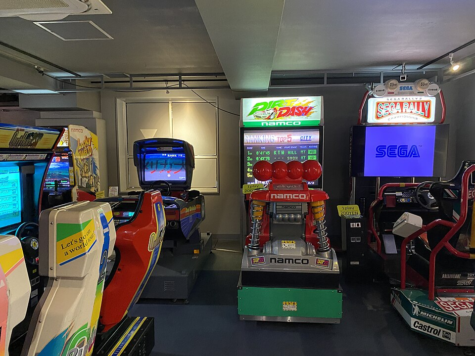
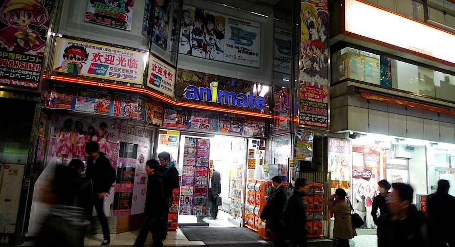
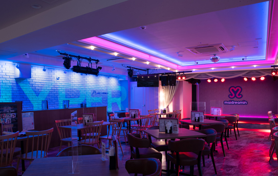
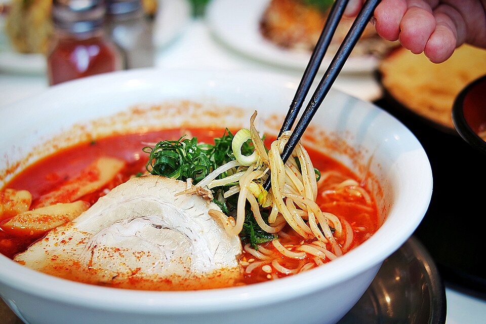
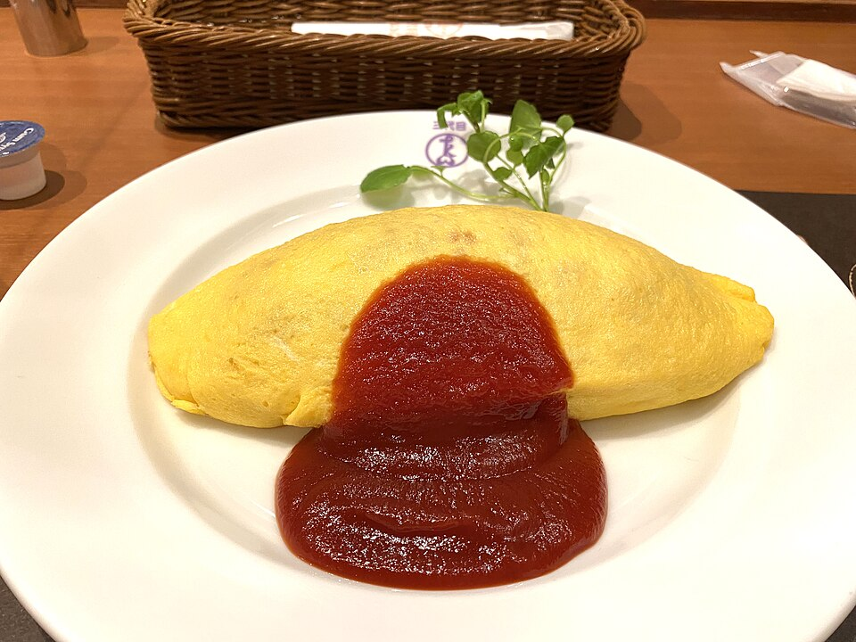
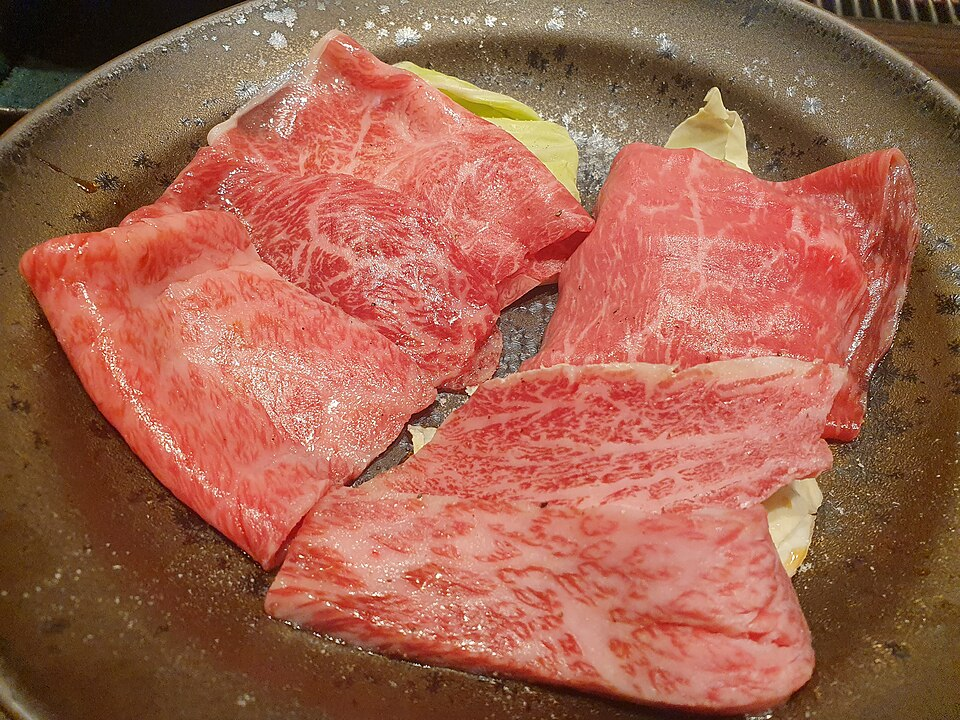
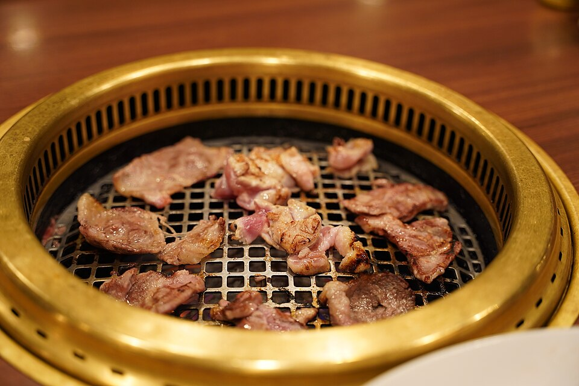
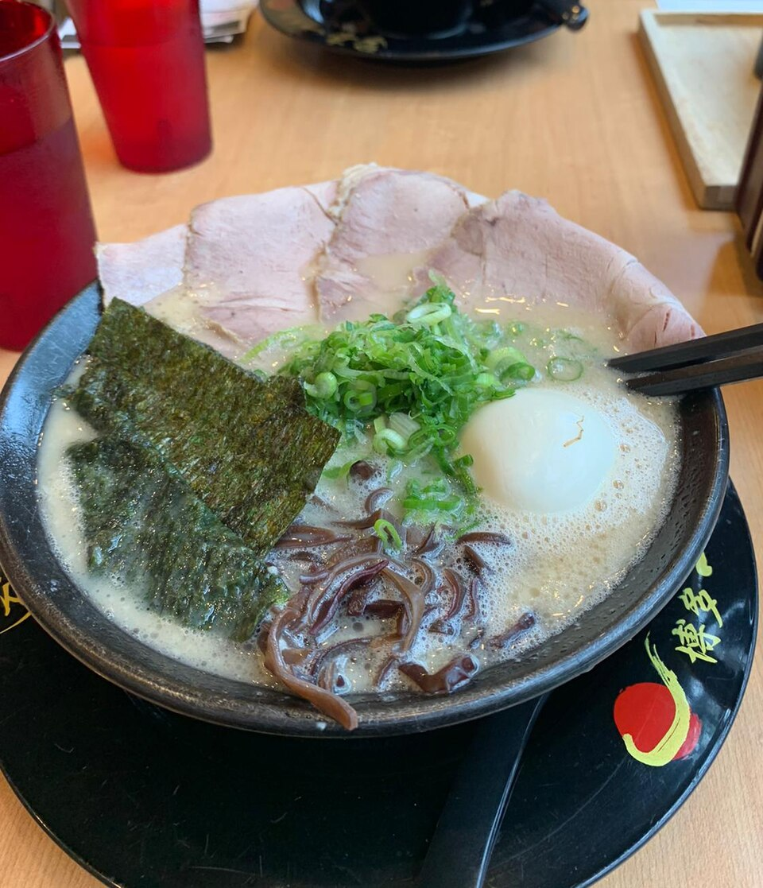
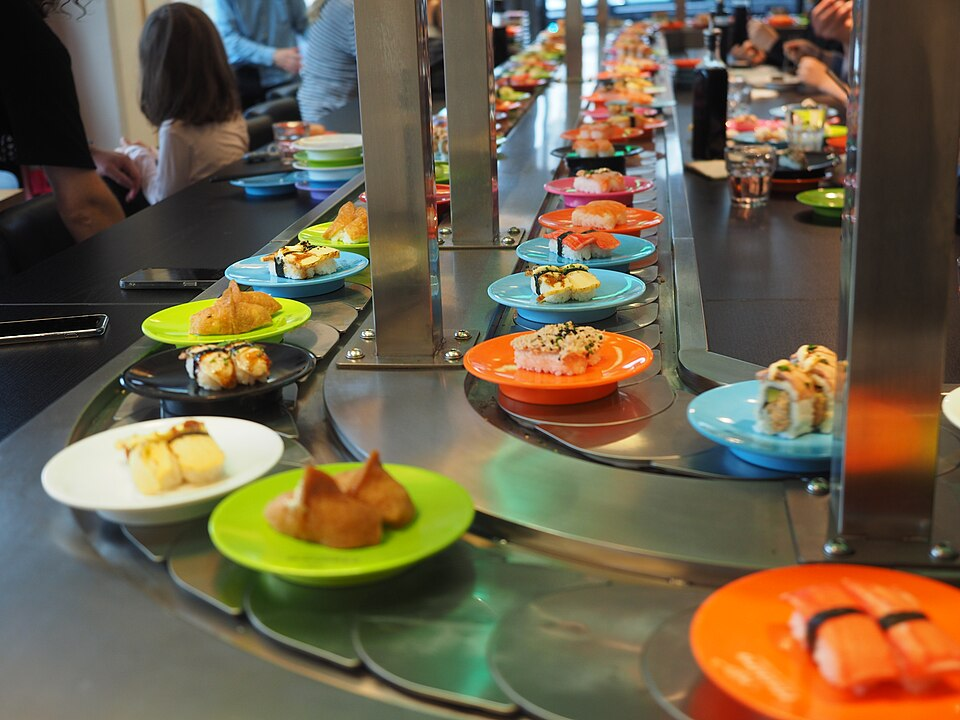
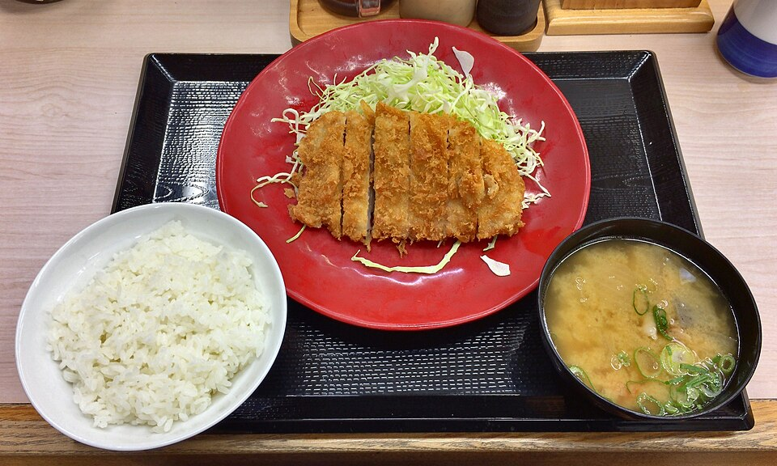

<title>Sam and Nikki in Akihabara</title>
<meta name="claude:viewport-fit-sides" content="cover">
<meta name="robots" content="noindex,nofollow">
<link rel="preconnect" href="https://fonts.googleapis.com"><link rel="preconnect" href="https://fonts.gstatic.com" crossorigin>
<link rel="stylesheet" href="https://fonts.googleapis.com/css2?family=Inter:wght@500;700;900&display=swap">
<link rel="stylesheet" href="https://unpkg.com/leaflet@1.9.4/dist/leaflet.css">
<style>
/* Layout: same language as the Munich page (red poster hero, white paper, black rules), cut into short blocks: clock, four lanes to pick from, a small map. Single light look on purpose. */
:root{
  --bg:#ffffff; --ink:#1a1a1a; --mute:#5c5c5c; --line:#e6e6e6;
  --red:#e5382b; --wash:#fde3df; --paper:#f6f5f2;
  --font:Inter,-apple-system,"Hiragino Sans",system-ui,sans-serif;
  color-scheme:light;
}
*{box-sizing:border-box;margin:0;padding:0;min-width:0}
body{background:var(--bg);color:var(--ink);font:500 16px/1.7 var(--font);-webkit-font-smoothing:antialiased;overflow-wrap:anywhere}
a{color:inherit}
em{font-style:normal;color:var(--red)}
b,strong{font-weight:900}
img{display:block;width:100%;height:100%;object-fit:cover;max-width:100%}
.in{max-width:760px;margin:0 auto;padding-left:max(16px,env(safe-area-inset-left,0px));padding-right:max(16px,env(safe-area-inset-right,0px))}
h2{font-size:clamp(24px,5vw,32px);line-height:1.25;font-weight:900;letter-spacing:-.02em;text-wrap:balance}
.eyebrow{font-size:12px;font-weight:700;letter-spacing:.08em;text-transform:uppercase;color:var(--mute)}
section{padding-block:44px;border-top:1px solid var(--ink)}
.lead{margin-top:10px;max-width:60ch}
.chip{display:inline-block;font-size:12px;font-weight:700;border:1px solid var(--ink);border-radius:999px;padding:2px 10px;white-space:nowrap}
.chip.r{background:var(--red);border-color:var(--red);color:#fff}

/* hero */
.hero{background:var(--red);color:#fff;overflow:hidden}
.hero .in{padding-block:18px 22px;display:grid;gap:14px}
.hero .ht{display:flex;justify-content:space-between;flex-wrap:wrap;gap:6px 12px;font-size:12px;font-weight:700;letter-spacing:.06em;text-transform:uppercase}
.hero h1{font-size:clamp(46px,14.5vw,128px);line-height:.88;font-weight:900;letter-spacing:-.05em;text-transform:uppercase}
.mos{display:grid;grid-template-columns:1fr 1fr;grid-template-rows:150px 120px;gap:4px}
.mos figure{position:relative;overflow:hidden;background:#c8321f}
.mos figure.w{grid-column:1/3}
.mos span{position:absolute;left:8px;bottom:8px;background:#fff;color:#111;font-size:12px;font-weight:900;padding:3px 8px}
.hero .hs{font-size:18px;font-weight:700;line-height:1.45;max-width:34ch}
@media(min-width:760px){.mos{grid-template-columns:2fr 1fr 1fr;grid-template-rows:200px}.mos figure.w{grid-column:auto}}

/* clock */
.clock{list-style:none;margin-top:22px;display:grid;gap:0;border-left:3px solid var(--ink)}
.clock li{display:grid;grid-template-columns:92px 1fr;gap:12px;padding:12px 0 12px 16px;position:relative;border-bottom:1px solid var(--line)}
.clock li::before{content:"";position:absolute;left:-9px;top:20px;width:15px;height:15px;border-radius:50%;background:var(--bg);border:3px solid var(--ink)}
.clock li.k::before{background:var(--red);border-color:var(--red)}
.clock time{font-size:20px;font-weight:900;font-variant-numeric:tabular-nums;line-height:1.3}
.clock b{display:block;font-size:17px;line-height:1.35}
.clock p{color:var(--mute);font-size:14px;line-height:1.55;margin-top:2px}
.note{margin-top:18px;background:var(--wash);padding:12px 14px;font-size:14px;line-height:1.6}

/* lanes */
.lanes{display:grid;gap:28px;margin-top:24px}
.lane{display:grid;gap:12px}
.lane-h{display:flex;gap:12px;align-items:center}
.lane-h i{font-style:normal;flex:none;display:grid;place-items:center;width:40px;height:40px;border-radius:50%;background:var(--red);color:#fff;font-size:18px;font-weight:900}
.lane-h h3{font-size:22px;line-height:1.25;font-weight:900}
.lane-h small{display:block;font-size:13px;font-weight:700;color:var(--mute)}
.lane .ph{aspect-ratio:16/9;overflow:hidden;border-radius:4px}
.spots{display:grid;gap:10px}
.spot{display:grid;grid-template-columns:1fr;gap:4px 12px;align-items:start;border:1px solid var(--line);border-radius:6px;padding:12px 14px;background:var(--bg)}
.spot.on{border-color:var(--red);background:var(--wash)}
.spot h4{font-size:17px;line-height:1.35;font-weight:900}
.spot p{grid-column:1/-1;font-size:14px;line-height:1.6;color:var(--ink)}
.spot .meta{grid-column:1/-1;display:flex;flex-wrap:wrap;gap:6px;align-items:center;margin-top:2px}
.spot .meta a{font-size:13px;font-weight:700}
@media(min-width:760px){.lane{grid-template-columns:240px 1fr;align-items:start}.lane-h{grid-column:1/-1}.lane .ph{aspect-ratio:4/3}}


/* map */
.map{margin-top:20px;border-radius:6px;overflow:hidden;background:var(--paper)}
#lmap{height:420px}
.nm{font:700 13px Inter,sans-serif;color:#1a1a1a;background:#fff;border:0;border-radius:4px;padding:2px 6px;box-shadow:0 1px 3px rgba(0,0,0,.3)}
.nm:before{display:none}
.pin{display:grid;place-items:center;width:32px;height:32px;border-radius:50%;background:var(--red);color:#fff;font:900 15px Inter,sans-serif;border:2px solid #fff;box-shadow:0 1px 4px rgba(0,0,0,.45)}
.pin.m{background:#1a1a1a;width:36px;height:36px;font-size:13px}
.pin.s{background:#fff;color:#1a1a1a;border-color:#1a1a1a;font-size:18px}
.key{display:flex;flex-wrap:wrap;gap:6px 16px;margin-top:12px;font-size:14px;font-weight:600;list-style:none;padding:0}
.key i{font-style:normal;display:inline-grid;place-items:center;width:22px;height:22px;border-radius:50%;background:var(--red);color:#fff;font-size:12px;font-weight:900;margin-right:6px}
@media(max-width:600px){#lmap{height:340px}}
.legend{margin-top:12px;display:grid;gap:4px;font-size:14px}

/* ways */
.ways{list-style:none;margin-top:18px;display:grid;gap:12px}
.ways li{padding-left:14px;border-left:3px solid var(--ink)}
.ways b{display:block;font-size:17px}
.ways span{color:var(--mute);font-size:14px}

/* food tiles (same as the Patrick page: photo, genre, name; tap for details) */
.tiles{display:grid;grid-template-columns:1fr 1fr;gap:10px;margin-top:18px;align-items:start}
@media(min-width:760px){.tiles{grid-template-columns:repeat(4,1fr)}}
.tile{border:1px solid var(--line);border-radius:6px;overflow:hidden;background:var(--bg)}
.tile[open]{border-color:var(--ink)}
.tile summary{display:block;list-style:none;cursor:pointer}
.tile summary::-webkit-details-marker{display:none}
.tile summary:focus-visible{outline:3px solid var(--ink);outline-offset:-3px}
.tile img{aspect-ratio:4/3;height:auto;background:var(--line)}
.tile .cb{display:block;padding:9px 10px 11px}
.tile .gn{display:block;font-size:10.5px;font-weight:900;letter-spacing:.06em;text-transform:uppercase;color:var(--red)}
.tile b{display:block;font-size:15px;line-height:1.3;margin-top:2px}
.tile .rt{display:block;font-size:12px;line-height:1.45;color:var(--mute);margin-top:3px;font-variant-numeric:tabular-nums}
.tile .op{display:block;margin-top:6px;font-size:11.5px;font-weight:900;color:var(--red)}
.tile .op::after{content:" +"}
.tile[open] .op{display:none}
.tile .more{border-top:1px solid var(--line);margin:0 10px;padding:8px 0 11px;font-size:13px;line-height:1.55;display:grid;gap:6px}
.tile .more a{font-weight:700}
.tile .pl{display:flex;gap:12px;flex-wrap:wrap}
.tile .pc{font-size:11px;color:var(--mute)}

footer{border-top:1px solid var(--ink);padding-block:28px 40px;font-size:13px;color:var(--mute)}
footer summary{cursor:pointer;font-weight:700}
footer ul{margin:8px 0 0 18px}
@media (prefers-reduced-motion:no-preference){.spot{transition:background .15s,border-color .15s}}
</style>

<header class="hero">
  <div class="in">
    <div class="ht"><span>Tuesday, November 3</span><span>13:00 to 16:00</span></div>
    <h1>Akiha&shy;bara</h1>
    <div class="mos">
      <figure class="w"><span>Akihabara</span></figure>
      <figure><span>B  Games</span></figure>
      <figure><span>A  Shopping</span></figure>
    </div>
    <p class="hs">Sam and Nikki, we meet at 13:00 inside Vie de France. Three hours, one small area, and you choose what we see.</p>
  </div>
</header>

<main>
  <section>
    <div class="in">
      <p class="eyebrow">The plan in one look</p>
      <h2>Two rounds and a <em>sit-down break</em></h2>
      <ol class="clock">
        <li class="k"><time>13:00</time><div><b>Meet inside Vie de France</b><p>The bakery café in BiTO Akiba Plaza, one minute from Akihabara station. Yuuki is inside from a little before 13:00.</p></div></li>
        <li><time>13:10</time><div><b>Round 1</b><p>Two places from the list below. About 30 minutes each.</p></div></li>
        <li class="k"><time>14:10</time><div><b>Break, 20 minutes</b><p>We sit down somewhere quiet, get a drink and choose round 2.</p></div></li>
        <li><time>14:30</time><div><b>Round 2</b><p>Two more places, or more time at a favourite.</p></div></li>
        <li class="k"><time>15:40</time><div><b>Last look, then goodbye</b><p>We finish near the station by 16:00.</p></div></li>
      </ol>
      <p class="note"><b>Today is Culture Day</b>, a national holiday in Japan, so the streets will be busy. Everything on this page is within about 3 minutes' walk, so we spend the time inside the shops, not on the road.</p>
    </div>
  </section>

  <section>
    <div class="in">
      <p class="eyebrow">Choose what sounds fun</p>
      <h2>Four kinds of places. <em>We pick as we go.</em></h2>
      <p class="lead">Tell Yuuki two or three anime, manga or games you love, and he will point you to the right shelves.</p>

      <div class="lanes">
        <div class="lane">
          <div class="lane-h"><i>A</i><h3>Figures and anime goods<small>Big shops, lots to look at</small></h3></div>
          <div class="ph"></div>
          <div class="spots">
            <article class="spot" data-id="Trader"><h4>Trader, main store</h4>
              <p>Big and bright, with many prize figures at good prices.</p>
              <div class="meta"><span class="chip">about 30 min</span><a href="https://www.google.com/maps/search/?api=1&query=Trader+Akihabara+main+store" target="_blank" rel="noopener">Map</a></div></article>
            <article class="spot" data-id="K-BOOKS"><h4>K-BOOKS, Akihabara main store</h4>
              <p>Keychains, badges and small goods. Strong on VTubers, Vocaloid and mobile games.</p>
              <div class="meta"><span class="chip">about 20 min</span><a href="https://www.google.com/maps/search/?api=1&query=K-BOOKS+Akihabara+Honkan" target="_blank" rel="noopener">Map</a></div></article>
          </div>
        </div>

        <div class="lane">
          <div class="lane-h"><i>B</i><h3>Games<small>Play together, or hunt for old consoles</small></h3></div>
          <div class="ph"></div>
          <div class="spots">
            <article class="spot" data-id="GiGO"><h4>GiGO arcade</h4>
              <p>6th floor: retro machines like Street Fighter II, Pac-Man and pinball. 5th floor: music games. 4th floor: Mario Kart and Taiko drums.</p>
              <div class="meta"><span class="chip">about 30 min</span><a href="https://www.google.com/maps/search/?api=1&query=GiGO+Akihabara+3" target="_blank" rel="noopener">Map</a></div></article>
            <article class="spot" data-id="BEEP"><h4>BEEP, retro games</h4>
              <p>A stylish retro game shop that recently moved under the train tracks by the station.</p>
              <div class="meta"><span class="chip">about 20 min</span><a href="https://www.google.com/maps/search/?api=1&query=BEEP+Akihabara" target="_blank" rel="noopener">Map</a></div></article>
            <article class="spot" data-id="Super Potato"><h4>Super Potato</h4>
              <p>The famous retro game shop. Small inside and on the pricey side, but fun to see.</p>
              <div class="meta"><span class="chip">about 15 min</span><a href="https://www.google.com/maps/search/?api=1&query=Super+Potato+Akihabara" target="_blank" rel="noopener">Map</a></div></article>
          </div>
        </div>

        <div class="lane">
          <div class="lane-h"><i>C</i><h3>Anime clothing<small>T-shirts, hoodies, stickers</small></h3></div>
          <div class="ph"></div>
          <div class="spots">
            <article class="spot" data-id="G-Store"><h4>G-Store Akiba</h4>
              <p>The most anime clothing in Akihabara. 4th floor of the Onoden building, easy to miss, so Yuuki leads.</p>
              <div class="meta"><span class="chip">about 25 min</span><a href="https://www.google.com/maps/search/?api=1&query=G-Store+Akiba+Akihabara" target="_blank" rel="noopener">Map</a></div></article>
            <article class="spot" data-id="COSPA"><h4>COSPA, atre Akihabara</h4>
              <p>A smaller version, right inside the station building. Hands Bee downstairs has anime and Japanese stickers.</p>
              <div class="meta"><span class="chip">about 15 min</span><a href="https://www.google.com/maps/search/?api=1&query=COSPA+atre+Akihabara" target="_blank" rel="noopener">Map</a></div></article>
          </div>
        </div>

        <div class="lane">
          <div class="lane-h"><i>D</i><h3>Maid café<small>Sit down, order, maybe a live show</small></h3></div>
          <div class="ph"></div>
          <div class="spots">
            <article class="spot" data-id="Maidreamin"><h4>Maidreamin, Heaven's Gate</h4>
              <p>Right by the station, with a good chance of a live show. It can also be our 14:10 break.</p>
              <div class="meta"><span class="chip">about 45 min</span><span class="chip r">can be the break</span><a href="https://www.google.com/maps/search/?api=1&query=Maidreamin+Heaven%27s+Gate+Akihabara" target="_blank" rel="noopener">Map</a></div></article>
          </div>
        </div>
      </div>
    </div>
  </section>

  <section>
    <div class="in">
      <p class="eyebrow">Where things are</p>
      <h2>All close to the station</h2>
      <div class="map"><div id="lmap" role="img" aria-label="Map of Akihabara showing the meeting point, Akihabara station and the four stops"></div></div>
      <ul class="key"><li><i>13</i>Meet here: Vie de France</li><li><i>A</i>Figures and goods</li><li><i>B</i>Games</li><li><i>C</i>Anime clothing</li><li><i>D</i>Maid café</li></ul>
      <p class="legend"><span>The other shops are a few minutes' walk from these. Yuuki knows the way, so no need to follow the map.</span></p>
    </div>
  </section>

  <section>
    <div class="in">
      <p class="eyebrow">Before 13:00 or after 16:00</p>
      <h2>Places to eat nearby</h2>
      <p class="lead">Not part of the tour, but handy if you eat in Akihabara before or after. All checked open today, Tuesday November 3. Ratings are from Google Maps. Tap a tile for details.</p>
      <div class="tiles">
        <details class="tile"><summary><span class="cb"><span class="gn">Dipping noodles</span><b>Tsujita</b><span class="rt">★ 4.9 on Google Maps<br>Holiday hours 11:00 to 21:30</span><span class="op">Details</span></span></summary>
          <div class="more"><p>A well-known tsukemen chain, opened here in 2025. Ticket machine at the door.</p><p>Next to Suehirocho station.<br>Cards and QR pay OK.</p><p class="pl"><a href="https://www.google.com/maps/search/?api=1&query=Tsujita+Kanda+Suehirocho" target="_blank" rel="noopener">Google Maps ↗</a></p><p class="pc">Photo: example of the dish, not this shop.</p></div></details>
        <details class="tile"><summary><span class="cb"><span class="gn">Omurice</span><b>Kanda Tamago-ken</b><span class="rt">★ 4.5 on Google Maps<br>11:00 to 21:15</span><span class="op">Details</span></span></summary>
          <div class="more"><p>Omurice: fried rice wrapped in a soft omelette. 11 counter seats, no reservations.</p><p>About 5 min on foot.<br>Cash only.</p><p class="pl"><a href="https://www.google.com/maps/search/?api=1&query=Kanda+Tamagoken+Akihabara" target="_blank" rel="noopener">Google Maps ↗</a></p><p class="pc">Photo: example of the dish, not this shop.</p></div></details>
        <details class="tile"><summary><span class="cb"><span class="gn">Yakiniku, private rooms</span><b>Ushi no Tatsujin</b><span class="rt">★ 4.4 on Google Maps<br>11:30 to 23:00</span><span class="op">Details</span></span></summary>
          <div class="more"><p>Grill your own beef in a private room. Booking recommended, 2-hour limit.</p><p>About 3 min from the station.<br>Cards OK.</p><p class="pl"><a href="https://www.google.com/maps/search/?api=1&query=Ushi+no+Tatsujin+Akihabara" target="_blank" rel="noopener">Google Maps ↗</a></p><p class="pc">Photo: example of the dish, not this shop.</p></div></details>
        <details class="tile"><summary><span class="cb"><span class="gn">Yakiniku, private rooms</span><b>Toraji</b><span class="rt">★ 4.3 on Google Maps<br>Today opens at 15:00 (holiday, no lunch)</span><span class="op">Details</span></span></summary>
          <div class="more"><p>A popular yakiniku chain with private rooms for two. About 6,000 to 8,000 yen each. You can book online.</p><p>1 min from the station.<br>Cards and QR pay OK.</p><p class="pl"><a href="https://www.google.com/maps/search/?api=1&query=Yakiniku+Toraji+Akihabara" target="_blank" rel="noopener">Google Maps ↗</a></p><p class="pc">Photo: example of the dish, not this shop.</p></div></details>
        <details class="tile"><summary><span class="cb"><span class="gn">Ramen</span><b>Tanaka Soba-ten</b><span class="rt">★ 4.2 on Google Maps<br>11:00 to 21:00</span><span class="op">Details</span></span></summary>
          <div class="more"><p>The highest-rated on this list. Buy a ticket at the machine outside, then sit at the counter.</p><p>About 10 min on foot, near Suehirocho station.<br>Cards and QR pay OK.</p><p class="pl"><a href="https://www.google.com/maps/search/?api=1&query=Tanaka+Soba-ten+Akihabara" target="_blank" rel="noopener">Google Maps ↗</a></p><p class="pc">Photo: example of the dish, not this shop.</p></div></details>
        <details class="tile"><summary><span class="cb"><span class="gn">Conveyor-belt sushi</span><b>Sushiro</b><span class="rt">★ 4.0 on Google Maps<br>11:00 to 23:00</span><span class="op">Details</span></span></summary>
          <div class="more"><p>Order on a touch screen, plates come on a belt. Waits are common, so book a time online.</p><p>1 min from the station, basement of BiTO AKIBA.<br>Cards and IC cards OK.</p><p class="pl"><a href="https://www.google.com/maps/search/?api=1&query=Sushiro+Akihabara+Ekimae" target="_blank" rel="noopener">Google Maps ↗</a></p><p class="pc">Photo: example of the dish, not this shop.</p></div></details>
        <details class="tile"><summary><span class="cb"><span class="gn">Dipping noodles</span><b>Tsukemen Yasubee</b><span class="rt">★ 3.9 on Google Maps<br>11:00 to midnight</span><span class="op">Details</span></span></summary>
          <div class="more"><p>Tsukemen: thick noodles you dip in a rich soup. 14 counter seats, short lines are normal.</p><p>About 2 min from the station.<br>Cash or IC card (Suica), no credit cards.</p><p class="pl"><a href="https://www.google.com/maps/search/?api=1&query=Tsukemen-ya+Yasubee+Akihabara" target="_blank" rel="noopener">Google Maps ↗</a></p><p class="pc">Photo: example of the dish, not this shop.</p></div></details>
        <details class="tile"><summary><span class="cb"><span class="gn">Japanese set meals</span><b>Ootoya</b><span class="rt">★ 3.9 on Google Maps<br>11:00 to 23:00</span><span class="op">Details</span></span></summary>
          <div class="more"><p>Grilled fish, chicken or pork with rice, soup and pickles. A picture menu and a calm room.</p><p>About 2 min from the station, 4th floor of BiTO AKIBA.<br>Cards, IC cards and QR pay OK.</p><p class="pl"><a href="https://www.google.com/maps/search/?api=1&query=Ootoya+Akihabara+BiTO+AKIBA" target="_blank" rel="noopener">Google Maps ↗</a></p><p class="pc">Photo: example of the dish, not this shop.</p></div></details>
      </div>
    </div>
  </section>
</main>


<footer>
  <div class="in">
    <p>Times are approximate and can move on the day. Message Yuuki on WhatsApp if you want to change anything.</p>
    <details><summary>Photo credits</summary><ul>
      <li>Maidreamin Heaven's Gate interior, official photo, maidreamin.com</li>
      <li>Akihabara Night.jpg, CC BY 4.0, Wikimedia Commons</li>
      <li>GiGO Retro Games Akihabara 15-09-2024 (1).jpg, CC BY 4.0, Wikimedia Commons</li>
      <li>Post Earthquake Tokyo - Animate shop.jpg, CC BY-SA 2.0, Wikimedia Commons</li>
      <li>Akihabara 20211126 01.jpg, CC0, Wikimedia Commons</li>
      <li>Ikkousha tonkotsu bowl.jpg by Wesoree, CC BY-SA 4.0, Wikimedia Commons</li>
      <li>Omurice by Taimeiken.jpg by Kanesue, CC BY 2.0, Wikimedia Commons</li>
      <li>Very hot tsukemen (close-up).jpg by insatiablemunch, CC BY 2.0, Wikimedia Commons</li>
      <li>Pork loin cutlet set meal of Katsuya.jpg by 毒島みるく, CC0, Wikimedia Commons</li>
      <li>Conveyor belt sushi at Mashiro Sushi.jpg by JIP, CC BY-SA 4.0, Wikimedia Commons</li>
      <li>Beef meat at yakiniku restaurant just outside Moon Beach.jpg by Syced, CC0, Wikimedia Commons</li>
      <li>Yakiniku grill with slices of beef, chicken and pork.jpg by Benlisquare, CC BY-SA 4.0, Wikimedia Commons</li>
    </ul></details>
  </div>
</footer>
<script src="https://unpkg.com/leaflet@1.9.4/dist/leaflet.js"></script>
<script>
(function(){
if(!window.L)return;
var P=[["13","Meet: Vie de France",35.69857,139.77366,"m"],["\u2605","Akihabara Station",35.69839,139.77426,"s"],["A","K-BOOKS (figures)",35.69789,139.77194],["B","GiGO (games)",35.69900,139.77081],["C","G-Store (clothing)",35.69829,139.77092],["D","Maidreamin",35.69802,139.77246]];
var m=L.map("lmap",{scrollWheelZoom:false});
L.tileLayer("https://server.arcgisonline.com/ArcGIS/rest/services/Canvas/World_Light_Gray_Base/MapServer/tile/{z}/{y}/{x}",{maxNativeZoom:16,maxZoom:18,attribution:"Tiles &copy; Esri"}).addTo(m);
var pts=P.map(function(p){L.marker([p[2],p[3]],{title:p[1],icon:L.divIcon({className:"",html:'<div class="pin '+(p[4]||"")+'">'+p[0]+"</div>",iconSize:[32,32],iconAnchor:[16,16]})}).addTo(m).bindTooltip(p[1],{permanent:true,direction:"right",offset:[16,0],className:"nm"});return[p[2],p[3]]});
m.fitBounds(pts,{padding:[50,90]});
})();
</script>
